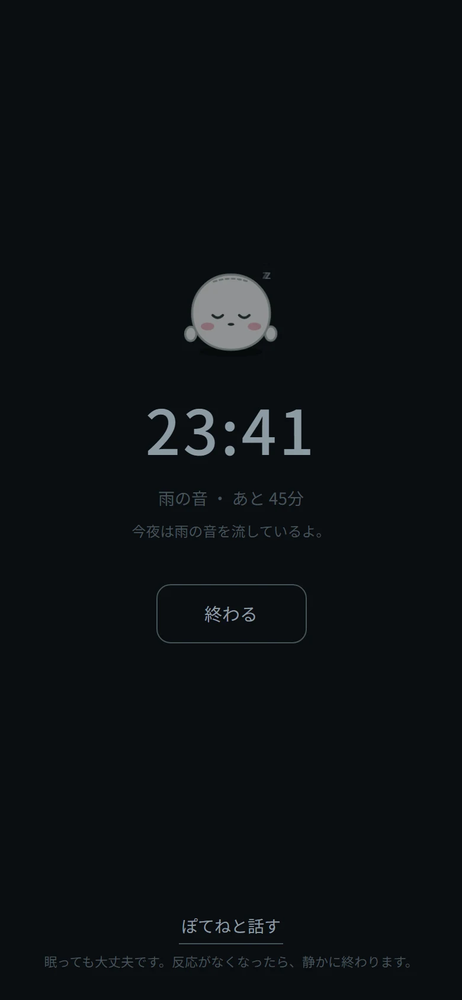
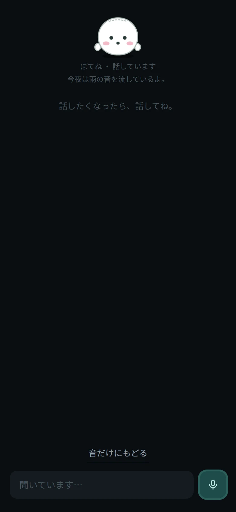
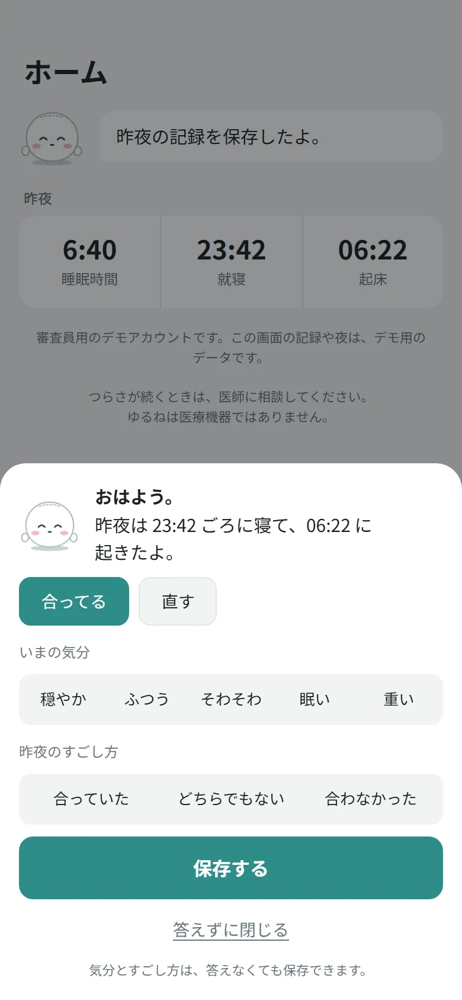
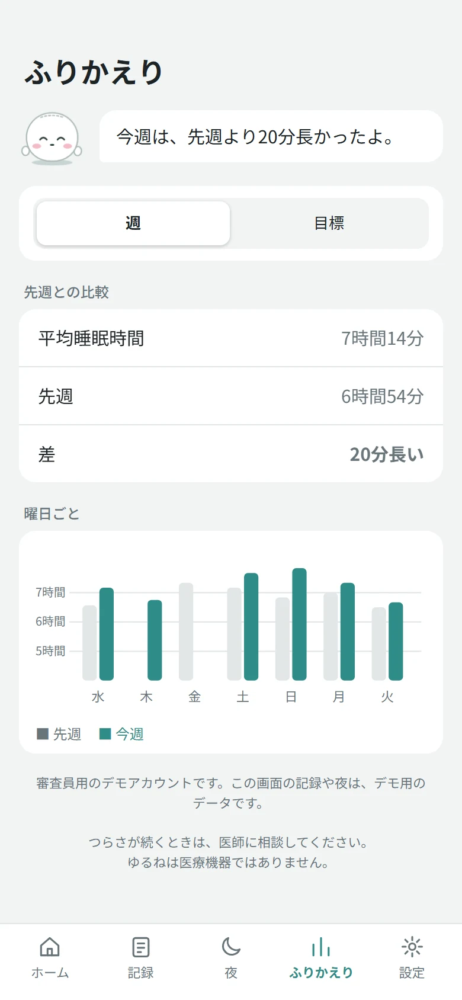

こんな夜に
がんばらなくていい夜を、つくります。
布団に入っても、なかなか寝つけない。
夜中に目が覚めて、また眠れるかなと考えてしまう。
何を試せばいいのか、もうよく分からない。
ゆるねは、そんな夜のそばで、静かに音を流し、あなたに合うすごし方を、いっしょに探します。
夜
夜は、静かに、そばにいる。
音は、アプリの中でつくります
雨、波、森の音を、その場でつくって流します。音源のファイルは使いません。音量は、ゆっくり上げて、ゆっくり下げます。設定した上限を超えることはありません。
話したくなったら、声で
ぽてねに、声で話しかけられます。ボタンを押さなくても、話しかけると聞き取ります。聞くのをやめたいときは、マイクのボタンで「お休み」にできます。声がないまま10分ほど続くと、自分で止まります。話さなくてもかまいません。「音だけにもどる」で、いつでも静かな夜に戻れます。
眠っても大丈夫
画面に触れず、声も出さなくなって、しばらくすると、静かに終わります。
音は、夜の画面で「音を流す」を押すと始まります（ブラウザの決まりです）。


朝とふりかえり
朝は、ひとことだけ。答えなくても。
朝のひとことは、ボタンを押すだけです。答えずに閉じることもできます。昨夜の就寝と起床の時刻は、1週間のグラフになります。
「今週は、先週より20分長かったよ。」のように、数字は、ぽてねがやさしく伝えます。点数や順位は、つけません。
画面は、すべてサンプルのデータです。


しくみ
ぽてねは、夜のすごし方を、見直し続けます。
ただ音を流すだけではありません。ぽてねは、あなたの夜を見て、決めて、確かめて、見直す流れを、自分で回します（計画・実行・確認・見直し。いわゆる PDCA です）。
見るのは、あなた自身の記録だけです。ほかの人のデータとは、混ざりません。
ふりかえりの「目標」には、いまの目標（夜のめやす）と、「いまのところ」の一文が出ます。
みる
夜のあいだ、画面に触れたか、声を出したか、どれくらい静かかを見ます。
きめる
音量を下げる、音を変える、終わる。選べる動作は、あらかじめ決まっています。
おこなう
決めたことを、プログラムが、安全な範囲で実行します。上限を超える指示は止めます。
たしかめる
週に1回、標準のすごし方の夜と、少し変えた夜を、近い日どうしで比べます。
見直す
合うものは選ばれやすく、合わないものは外します。変わりすぎたら、標準に戻します。
見直したあとは、また「みる」に戻ります。
はじめの7夜は、ようすを見るだけ
最初の7夜は、標準のすごし方で、夜のようすを見ます。そのあとは、3夜に1夜が標準の夜。ほかの夜は、音か、音量の下げ方のどちらか、ひとつだけを変えて試します。
結論は、夜の数がそろうまで出しません。それまでは、「いまのところ」と伝えます。
この仕組みは、合成した利用者で、動きを確かめています。確かめたのは仕組みの動きで、効果ではありません。
ゆるり
ゆるりの約束
「ゆるり」は、力を抜いて、ゆったり、という意味です。ゆるねの作りのすべてに、この約束が通っています。
- せかさない
- 1晩に変えるのは、ひとつだけ。結論は、夜の数がそろうまで出しません。
- 責めない
- 点数も、連続記録も、赤い警告もありません。記録のない夜は、失敗ではありません。
- 頼まない
- 必要な操作は、夜を始めることだけ。通知は送りません。
- やわらかい言葉で
- 「めやす」「ようす」と言います。数字を、押しつけません。
- いつでも標準に
- 「好みを覚える」をオフにすると、標準のすごし方のままです。
- 静かに働く
- 夜の画面には、よけいな文字を出しません。
- 毎日は言わない
- 受診のすすめは、毎日は出しません。出すときも間をあけ、「今は表示しない」で止められます。
安心のこと
AIにまかせるのは、言葉のところだけ。
AIを使わなくてよいことには、AIを使いません。統計、判定、音量の上限、終わらせる条件は、プログラムが決めます。AIは、夜のあいだの応答と、ぽてねとの会話の言葉に使います。
返事は、出る前に検査します
- 入力 電話番号やメールなどは「○○」に伏せます。病気や薬の質問には、AIを使わず、決まった文で答えます。
- 出力 数字、過去のできごと、禁止された表現を、返事から止めます。
- 動作 AIが呼べる動作は、許可リストの中だけ。上限を超える指示は、拒否して記録します。
- 上限と停止 呼び出しの回数に上限があり、止まったときは、規則だけで夜を続けます。止めるスイッチもあります。
あなたのデータ
- 会話の全文は保存しません。保存するのは、構造化した記録だけです。
- 記録は利用者ごとに分けて保存され、ほかの人からは見えません。
- 「データを消す」で、記録と覚えたことを、すべて削除できます（パスワードを入力して確認します）。
- ぽてねの判断は、会話の本文を含めない形で、すべて記録に残ります。
Google Cloud で動かす構成です
- Cloud Run
- アプリ
- Firestore
- 記録（利用者ごとに分離）
- Firebase Authentication
- ログイン
- Gemini
- 夜の応答と、会話の言葉
- Model Armor
- 入力と出力の検査（自前の検査に重ねる）
- Cloud Text-to-Speech
- ぽてねの声
- Cloud Logging / Trace
- 運用の記録（本文は含めません）
できないこと
ゆるねが、しないこと。
- 病気の診断は、しません。
- 薬についての助言は、しません。
- ぐっすり眠れる、とは約束しません。
- 寝る時間を無理に短くするような方法は、取り入れません。
「つらさが続くときは、医師に相談してください。ここでは、病気や薬のことには答えられません。」
よくある質問
気になること。
医療のアプリですか。
いいえ。ゆるねは医療機器ではなく、睡眠のサポートです。つらさが続くときは、医師に相談してください。
ぽてねとの会話は、残りますか。
会話の全文は保存しません。ログにも、会話の本文は出しません。
雨や波の音は、どこから来ますか。
アプリの中で、その場でつくっています。音源のファイルは使っていません。
通知は来ますか。
来ません。必要な操作は、夜を始めることだけです。
データは消せますか。
設定の「データを消す」から、記録と覚えたことを、すべて削除できます。パスワードを入力して確認します。
ほかの人のデータと混ざりませんか。
記録は、利用者ごとに分けて保存します。ほかの人の記録が、あなたの画面に出ることはありません。
どんな端末で使えますか。
スマートフォンのブラウザで動きます。ホーム画面に追加して、アプリのように使えます。